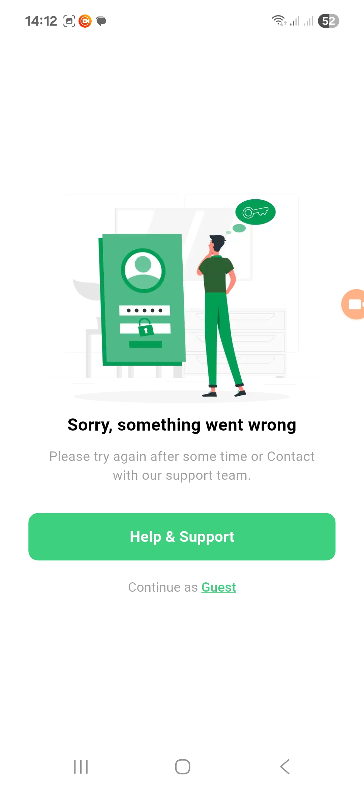
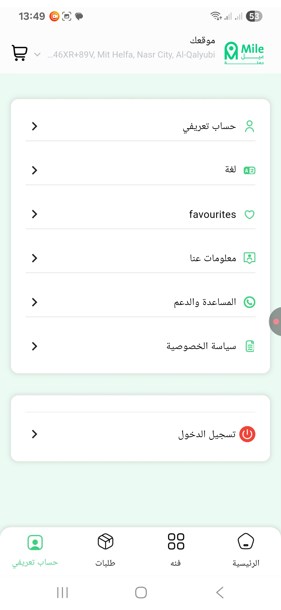
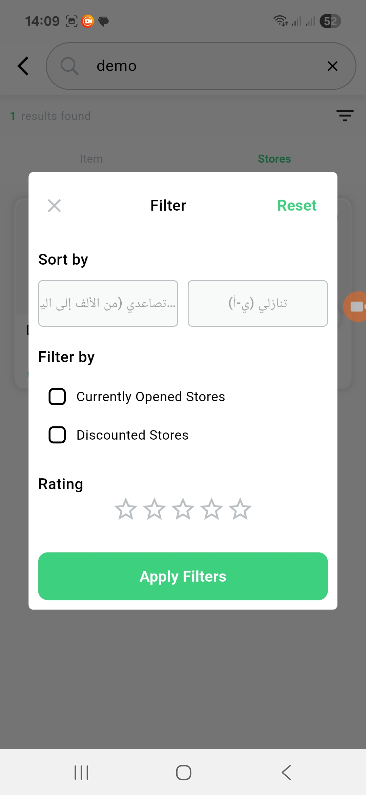
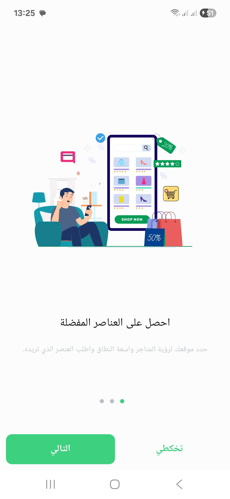
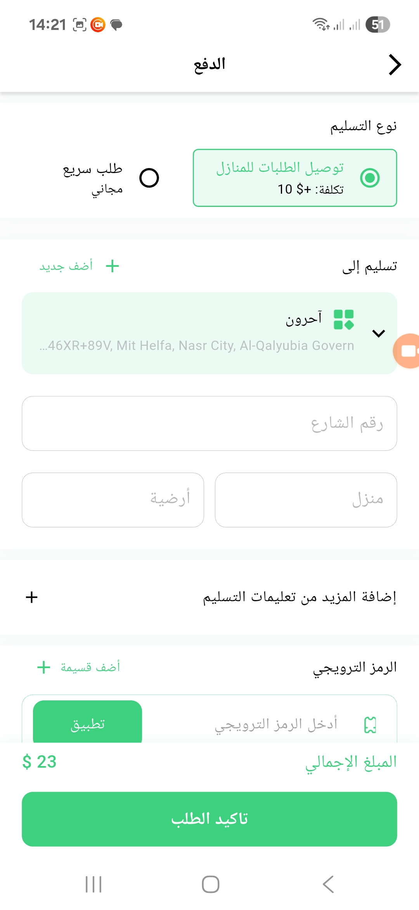
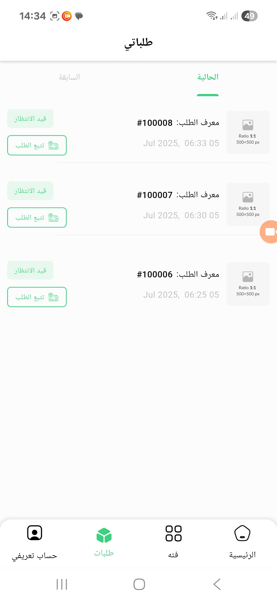
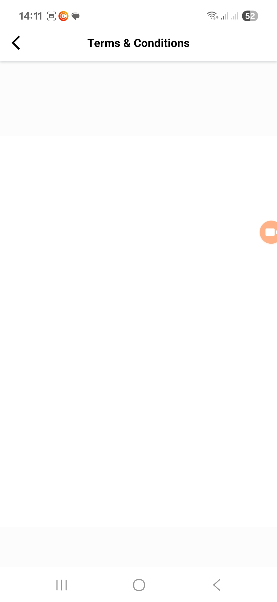
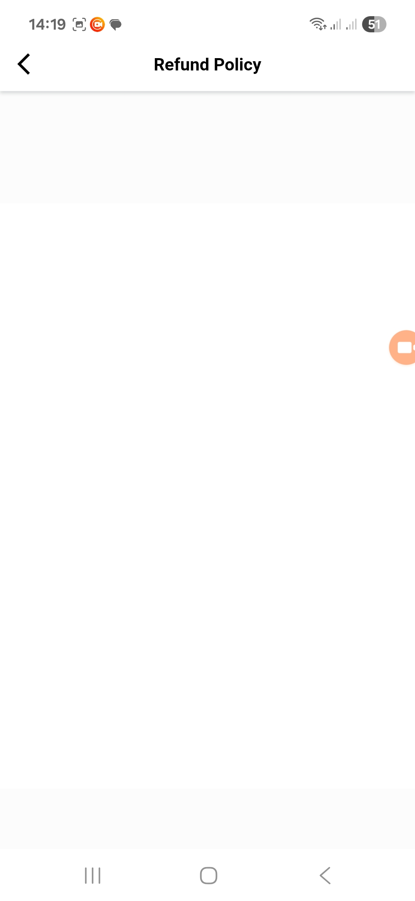
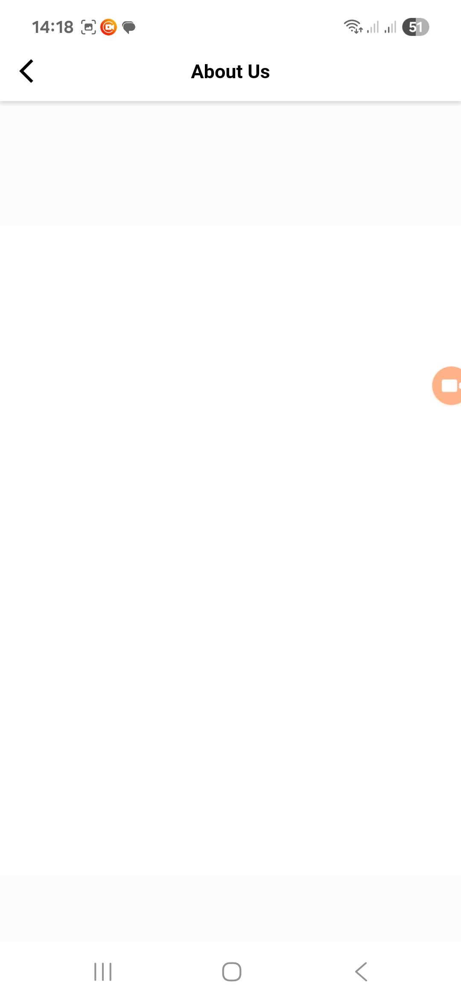
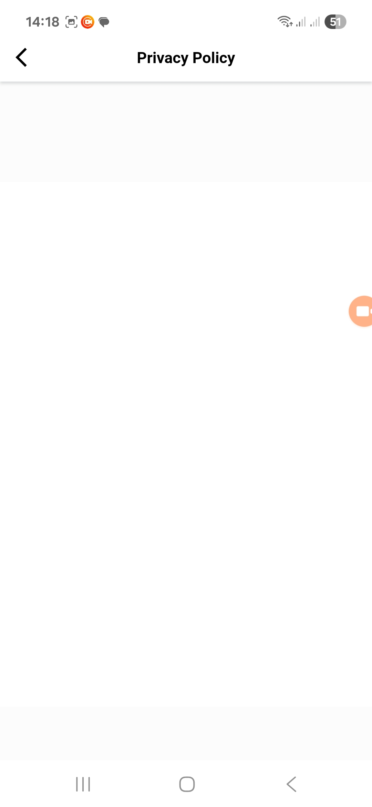

تقرير مراجعة التطبيق
مراجعة ومطابقة المتطلبات للتطبيق الفعلي
تسجيل الدخول والملف الشخصي
-
المستخدم يمكنه تسجيل الدخول باستخدام البريد الإلكتروني فقط (لا يوجد تسجيل دخول بالحسابات الاجتماعية)
-
لا يوجد إنشاء ملف شخصي للبائع (متوفر للمستخدم فقط)
-
لا توجد وسائل دفع بالتطبيق غير الدفع عند الاستلام
البحث وتصفح المنتجات
- لا توجد مشاكل في هذا القسم
عربة التسوق والخروج
- لا توجد وسائل دفع غير الدفع عند الاستلام
تقييمات المنتجات والتعليقات
- يوجد نظام تقييمات ولكن لا يوجد تعليقات أو استفسارات على المنتجات
دعم العملاء
-
تتوفر صفحة وسائل الاتصال بالدعم
-
لا توجد صفحة الأسئلة الشائعة كما هو مذكور في المتطلبات
التخصيص والتصميم المتجاوب
-
يمكن للمستخدم تخصيص اللغة والوضع الليلي
-
لا يوجد خيار تخصيص العملة كما هو مذكور في المتطلبات
-
لوحة التحكم لا تتضمن خيار اللغة غير الإنجليزية
المواصفات العامة للمشروع
-
لا يدعم الدفع الإلكتروني
-
الإشعارات لا تعمل
-
لا يوجد ربط تسجيل الدخول بـ SMS
أخطاء التطبيق (مرتبة حسب الأهمية)
الأخطاء الحرجة
1. مشكلة الخروج من التطبيق
-
عند محاولة الخروج من التطبيق عن طريق زر العودة في الصفحة الرئيسية، التطبيق لا يخرج
-
عند الضغط المتكرر على زر العودة، يبدأ التطبيق في البطء وإظهار رسائل عشوائية للمستخدم
-
لا يمكن الخروج من التطبيق بشكل طبيعي
-
بعد الخروج ومسح التطبيق من الذاكرة، التطبيق لا يعمل عند محاولة فتحه مرة أخرى
2. خاصية نسيان كلمة المرور غير موجودة
-
لا توجد خاصية استرداد كلمة المرور في صفحة تسجيل الدخول
-

الأخطاء الوظيفية
3. إلغاء الطلب لا يعمل
-
وظيفة إلغاء الطلب غير فعالة
-
لا توجد أسباب إلغاء للمستخدم للاختيار منها
4. مشكلة في إتمام الطلب
-
في بعض الأحيان لا يمكن للمستخدم إتمام الطلب
-
تظهر رسالة تفيد بوجوب إضافة على الأقل 1 دولار رغم وجود عنصر في السلة بالفعل
5. مشكلة في مشاركة المتجر
-
عند مشاركة متجر لمستخدم آخر والضغط على الرابط، لا يحدث شيء
مشاكل واجهة المستخدم
6. نافذة غير قابلة للإغلاق بعد إتمام الطلب
-
عند إتمام الطلب تظهر نافذة أسفل الشاشة للمستخدم
-
لا يمكن التخلص منها إلا عن طريق الذهاب لمتابعة الطلب
7. مشكلة في التنقل في صفحة الفئات
-
عند الذهاب لصفحة الفئات عن طريق الضغط على "عرض الكل"، لا يوجد زر عودة
-
الشريط أسفل الشاشة مختفي
-
المستخدم لا يمكنه العودة إلا عن طريق ضغط عودة من الهاتف نفسه
8. رسالة خطأ غير واضحة لكلمة المرور
-
عند كتابة كلمة المرور 8 مسافات، تظهر رسالة للمستخدم أن عدد الحروف يجب أن يكون أكثر من 8 أحرف
-
الرسالة يجب أن تكون معبرة أكثر عن المشكلة الفعلية
مشاكل اللغة والترجمة
الترجمة الآلية غير المعبرة
-
الترجمة للكلمات ترجمة آلية ومعظم الوقت غير معبرة
-
تحتاج مراجعة وتصحيح يدوي
-
مثال: "افتح الآن" بدلاً من "مفتوح الآن"
-

كلمات غير مترجمة
-
"favorites" غير مترجمة للعربية والأسهم اتجاهها لا ينعكس مع تغير اللغة
-

-
"تصاعدي" و"تنازلي" غير مترجمة للإنجليزية و"تصاعدي" لا تظهر بشكل كامل للمستخدم
-

أخطاء إملائية
-
"تخكطي" بدلاً من "تخطي"
-

-
"احرون" بدلاً من "آخرون"
-

الأرقام والتواريخ غير معربة
-
الأرقام والتواريخ بشكل عام غير معربة
-

صفحات فارغة في التطبيق
بعض صفحات التطبيق فارغة (لست متأكداً إذا كان عمداً وسيتم إضافتها لاحقاً):
-

-

-

-

الخلاصة والتوصيات
حالة لوحة تحكم الإدارة
-
لوحة تحكم الإدارة تعمل بشكل جيد
-
قد تحتاج بعض المراجعة الإضافية للتأكد من سهولة الاستخدام
التقييم العام
-
بشكل عام التطبيق جيد ولكن لا يزال يحتاج بعض التعديلات
-
التطبيق مخصص للمستخدمين فقط (لا يوجد للبائعين أو مندوبي التوصيل)
-
لست متأكداً من وضوح لوحة تحكم شركات الشحن ولوحة تحكم المتاجر
التوصية
يُفضل التواصل مع المطور ومعرفة التفاصيل الخاصة بالوحات المذكورة أعلاه لضمان اكتمال الفهم حول وظائف التطبيق.